Depiction and structuring of flat plants
The Programming editor has a graphics editor to program the plant. All input blocks, output blocks, and program logic in use are visible on the top display level.
Input blocks, output blocks, and program logic are arranged in chart strips and groups to improve the overview.
In the chart in the Programming editor, the various elements are used to structure the plant and add comments and enumerations.
The plant example HelloWorld21:
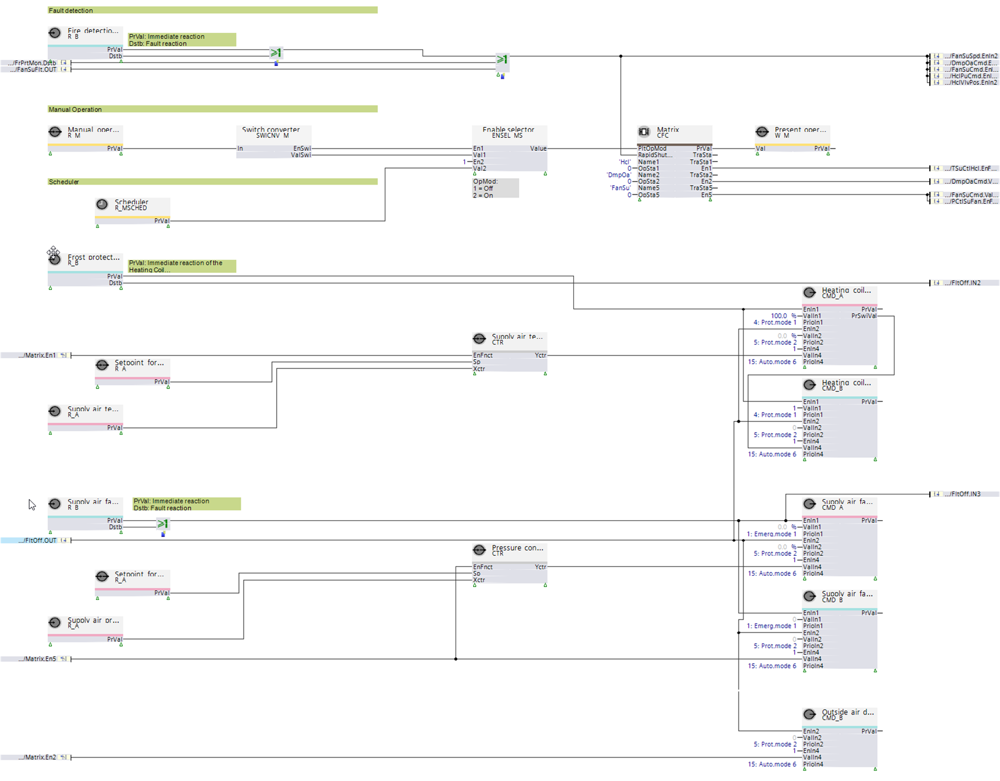
The various plant components, including heating coils, fans, or air dampers, are arranged in horizontal chart strips.
Each chart strip includes input blocks, output blocks, and program logic required for this plant component.
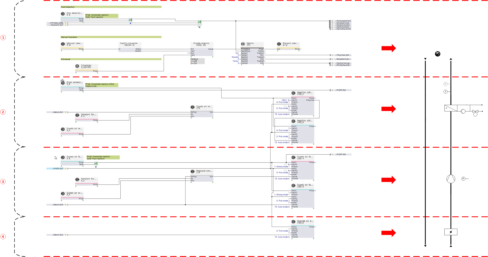
① Chart strips for determining plant operating modes, e.g. plant switch, emergency switch, fire detector, or scheduler
② Chart strips to control the heating coil
② Chart strips to control the fan
④ Chart strips to control the air damper
Input blocks, output blocks, and program logic are arranged in vertical groups.
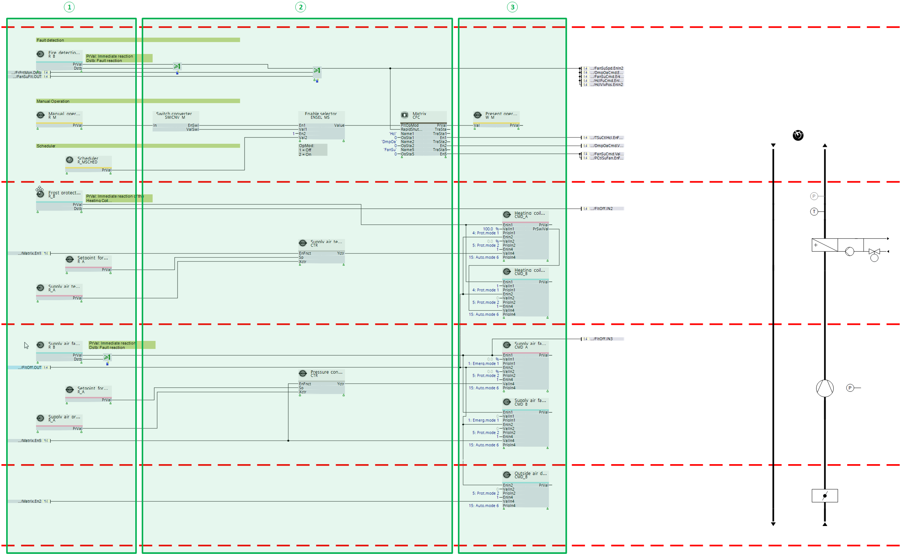
① Input blocks
② Program logic (function blocks and nested charts)
③ Output blocks
Input blocks and output blocks interconnect to physical plant components or software components, e.g. other function blocks.
To simplify optical differences, the corresponding blocks are arranged horizontally with an offset in the Programming editor.
Input blocks
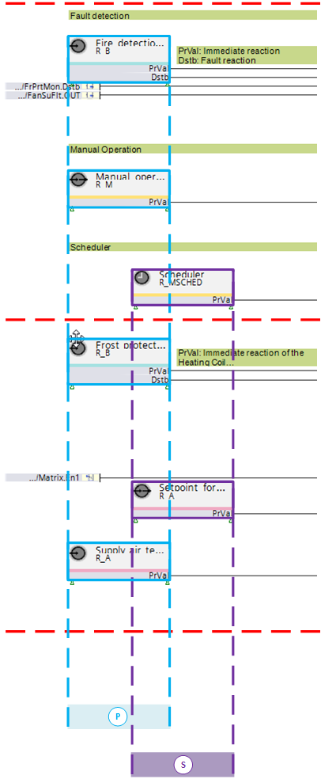
Ⓢ Input blocks to interconnect software components
Ⓟ Input blocks to interconnect physical plant components
Output blocks
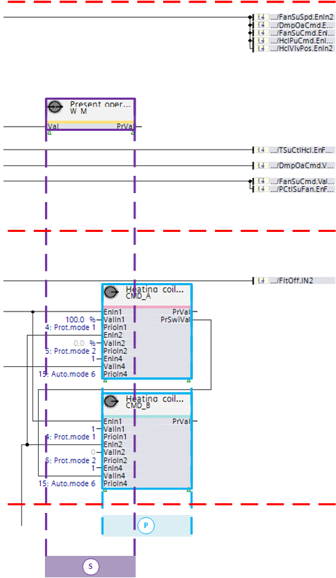
Ⓢ Output blocks to interconnect software components
Ⓟ Output blocks to interconnect physical plant components
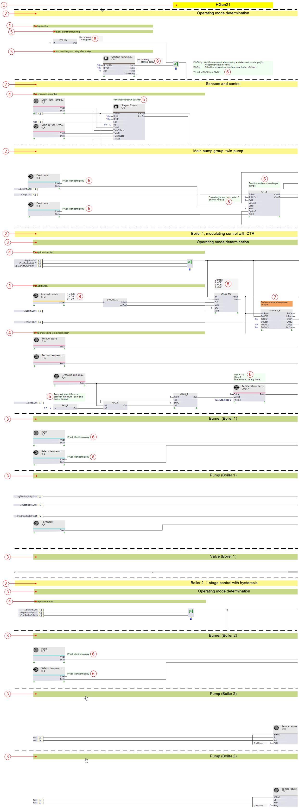
① Plant designation
② Main separator
③ Sub-separator
④ Function separator
⑤ Function comment
⑥ Programming comment
⑦ Programming comment in main block
⑧ Enumeration comment
① Plant designation
The plant designation is at the top of the chart in the Programming editor, e.g., HGen21. On predefined plants, the type matches the name in the library.
② Main separator
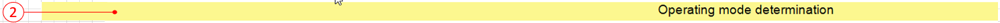
Identifies a structural or functional sub-division of the chart.
For example, plant HGen21 is sub-divided into the following areas:
- Operating mode determination (plant)
- Sensors and control
- Main pump group, twin pump
- Boiler 1, modulating control with CTR
- Boiler 2, single-stage control with hysteresis
③ Sub-separator
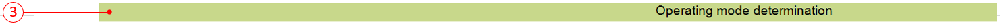
Sub-divides the main separator into various areas. For example, main separator "Boiler 1, modulating control with CTR" in HGen21 is divided into the following sub-areas:
- Operating mode determination (boiler 1)
- Burner (boiler 1)
- Pump (boiler 1)
- Valve (boiler 1)
④ Function separator
Sub-divides the sub-separator by function. For example, the sub-separator "Operating mode determination (boiler 1)" divides into the following functions:
- Exception acquisition
- Manual switch
- Temperature setpoint determination
Comments permit even more detailed structures or provide additional notes for programming.
Enumeration comments display the set enumerations for function blocks.
⑤ Function comments
Permits a functional or structural sub-division within a separator. For example, the function separator "Start-up control" in the main separator "Operating mode determination" is structured using the following functional comments:
- Maintain plant switch-off
- Alarm handling and delay after startup
⑥ Programming comment
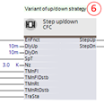
Explains or determines the program logic or program function.
⑦ Programming comment main block
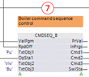
Emphasizes the program function of a main block.
⑧ Enumeration comment
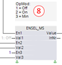
Displays the set enumeration.
⑨ Caution comment
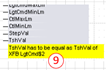
Emphasizes a special situation or condition.